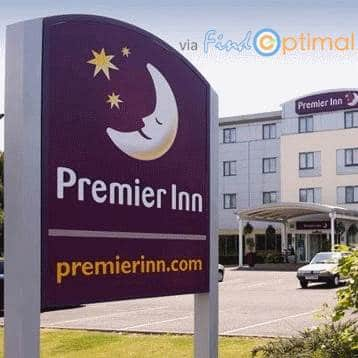

需要英国经济旅店朋友的福音：我们最近完成了Premier Inn的集成。从现在起，如果使用寻优网搜寻英国和爱尔兰的经济旅店，您就可能找到Premier Inn酒店。 Premier Inn 是英国最大的连锁酒店，拥有750家酒店、65,000 个房间。无论是城市中心、郊外还是机场，您都会看到Premier Inn的身影。因为Premier Inn以直销为主，所以您要是使用其他在线代理就会错过它的。Travel update
加盟Premier Inn
需要英国经济旅店朋友的福音：我们最近完成了 Premier Inn 的集成。从现在起，如果使用寻优网搜寻英国和爱尔兰的经济旅店，您就可能找到Premier Inn酒店。 Premier Inn 是英国最大的连锁酒店，拥有750家酒店、65,000 个房间。无论是城市中心、郊外还是机场，您都会看到Premier